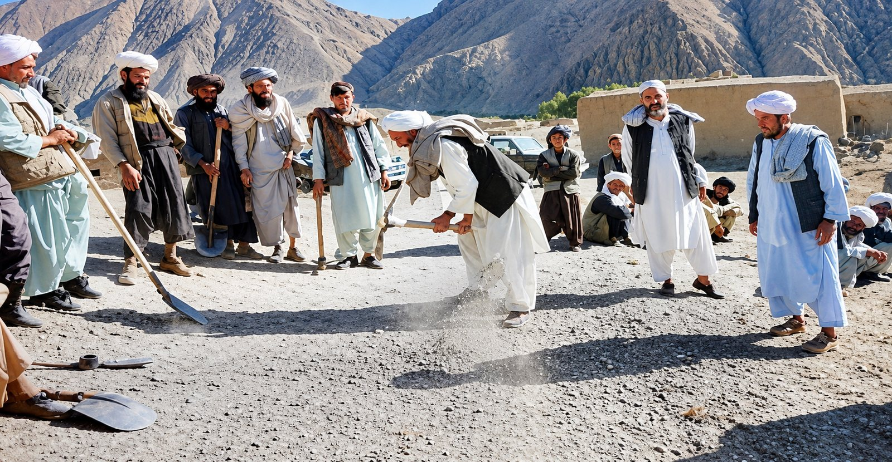
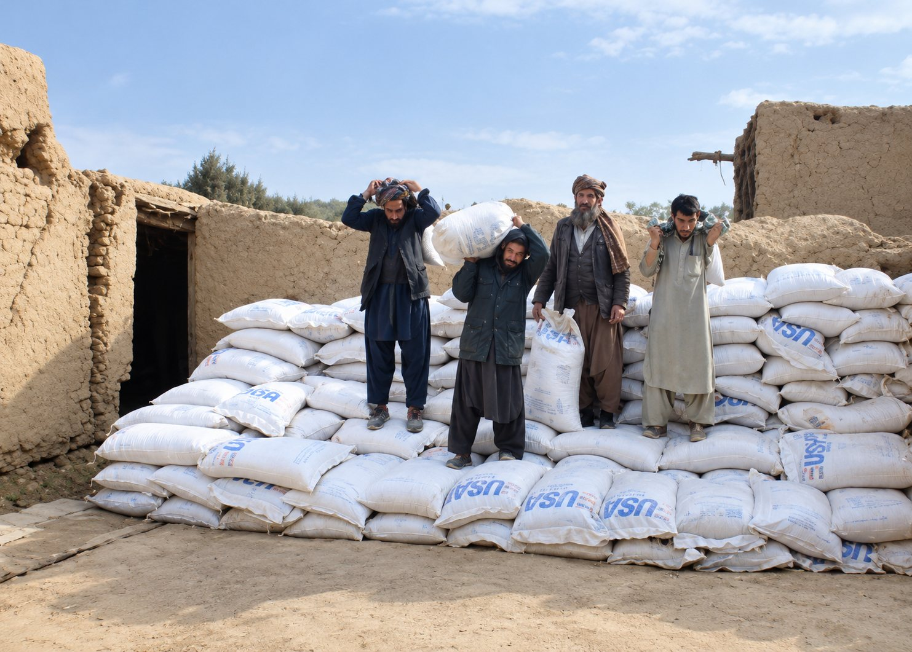
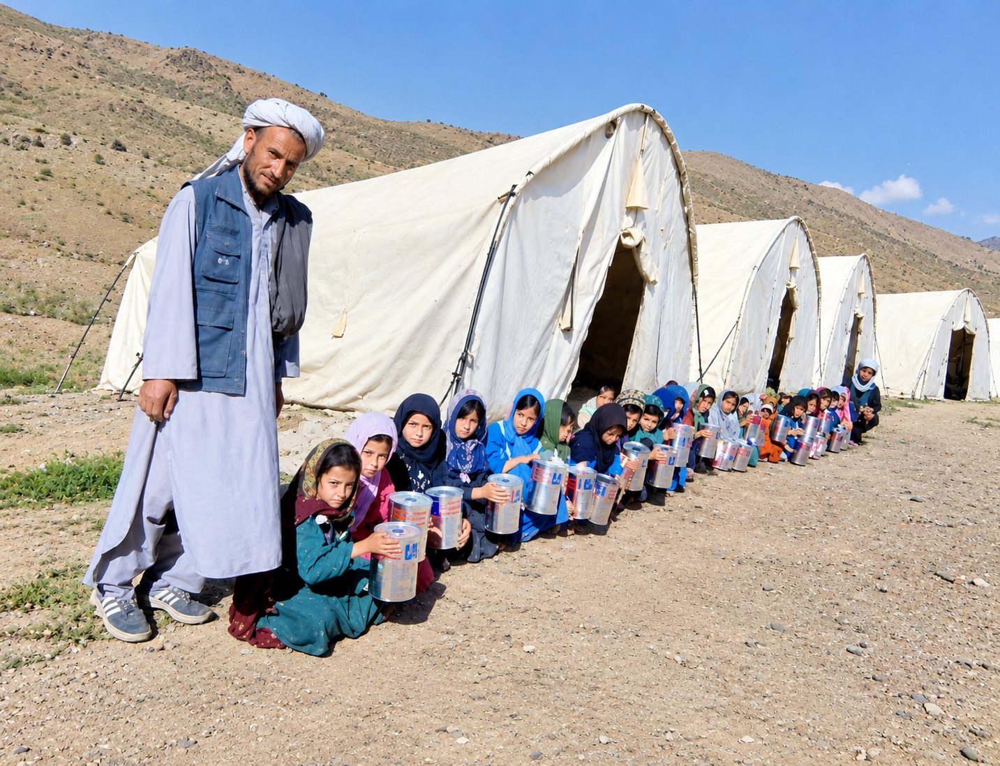
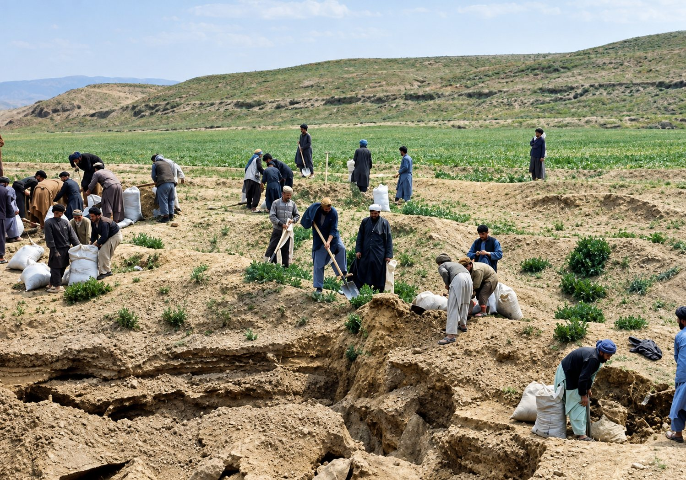
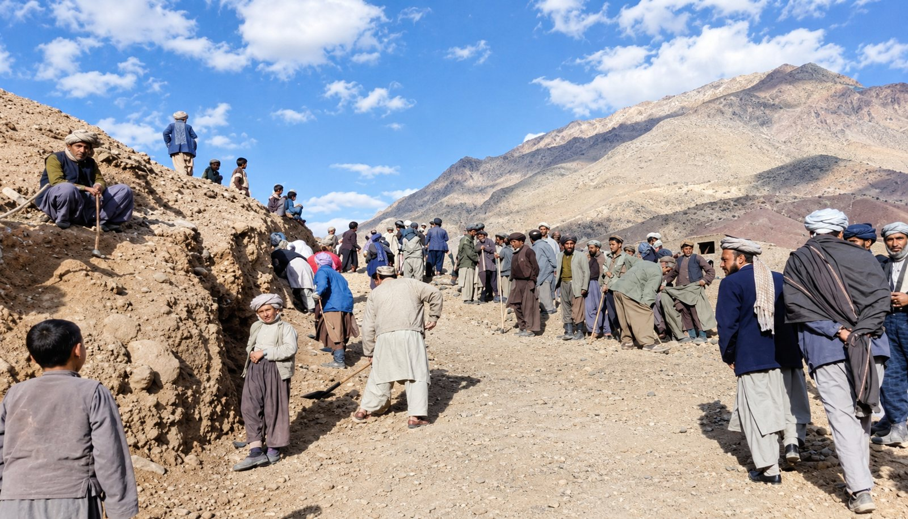
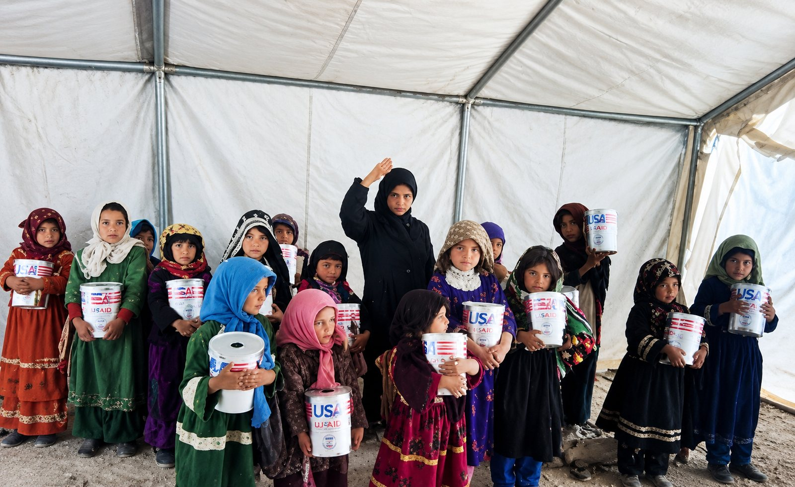

Projects
Practical work with communities, delivered for UN agencies, international NGOs and embassies.
Years of work on the ground
Since its establishment, CAO has implemented a wide range of projects funded by UN agencies and other international donors, particularly in the western region.
Our work has reached communities in Ghor, Badghis, Nimroz and Farah provinces, with partners including FAO, the World Food Programme (WFP), UNHCR, the International Rescue Committee (IRC) and the Embassy of Japan. After a pause of some years, the organization has restarted its activities with a qualified and energetic team.

What our projects have delivered
Food security and agriculture
Distribution of improved wheat seed, fertilizer, wheat and cooking oil to farming families.
Food for education
Food support linked to schooling and training, and distribution of school books.
Water and irrigation
Cleaning and reconstruction of canals and traditional kariz systems, and construction of check dams that protect farmland and water.
Roads and rural infrastructure
Construction of rural roads, culverts and protection walls that connect villages to markets, schools and services.
Shelter
Construction of shelters for families in need, in partnership with UNHCR.
School construction
Building classrooms so that children have a permanent place to learn.
Moments from the field




Looking for a local partner?
We can share more about our experience and references on request.